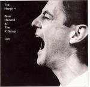

| Artist: | Peter Hammill & The K Group |
| Title: | The Margin+ |
| Label: | Fie! FIE 9125 |
| Length(s): | 76+58 minutes |
| Year(s) of release: | 2002 |
| Month of review: | [06/2002] |
| 1) | The Future Now | 3.49 |
| 2) | Porton Down | 5.41 |
| 3) | Stranger Still | 6.23 |
| 4) | Sign | 6.38 |
| 5) | The Jargon King | 3.19 |
| 6) | Empress's Clothes | 5.51 |
| 7) | The Sphinx In The Face | 5.16 |
| 8) | Labour Of Love | 5.50 |
| 9) | Sitting Targets | 5.42 |
| 10) | Patient | 7.31 |
| 11) | Flight | 20.32 |
Disc 2:
| 1) | The Second Hand | 6.03 |
| 2) | My Experience | 4.13 |
| 3) | Paradox Drive | 4.18 |
| 4) | Modern | 7.42 |
| 5) | Film Noir | 5.06 |
| 6) | The Great Experiment | 5.47 |
| 7) | Happy Hour | 9.46 |
| 9) | Again | 4.22 |
| 10) | If I Could | 5.52 |
Porton Down is a sinister piece with a subtle blues feel, plenty of piano and not so great sounding electronic drums. They sound a bit too electronic. Again, Hammill shows the back of his tongue in his typical aggressive vocal style. The guitar sound has an American ring to it, and sometimes borders on ethereal/soundscapish. A good song, a bit in the style of Patient, but too bad about the drums.
With Stranger Still it is time for a piano ballad, and some subtle guitar. The melodies are good again. The middle part has percussive piano and atmospheric guitar playing, the music bobbing along in a way. This passage also enhances the live feel, taking a bit more time for the instrumental parts. Some space effects in there as well. The vocal closing takes some getting used to.
Sign opens moodily with a low rumbling/zooming bass, all quite relaxed. Again the dramatic elements of the band comes to the fore in the vocal parts when the drums start. The overall style has something of New Wave, but the band knows how to rock as well. Guy Evans is a busy man during this track with some nice shuffled drumming, while the guitar rages in the middle part. Very active.
The Jargon King is one my less favourite Hammill tracks. It is also a track that has been covered by The Cure, a band one would not easily relate to Hammill. The electronic drums dominate. One might be thinking of King Crimsons Elephant Talk here. A bit neurotic in all and about "talk" with the vocals being recited and plenty of awkward effects.
Empress's Clothes has the flat and dated electronic percussion with trite beeps in there as well. Not great. However, the song itself is quite good: a typical end of the seventies song, not very "prog" but with a good sinister ring to it.
With The Sphinx In The Face Hammill harkens back to his final Van Der Graaf album. The opening of this song is rather relaxed with strumming guitar and yes those awkward electronic drums again. Hammill sings with the necessary pathos and drama with varied, sometimes desperate vocals and percussively played piano. I do think the song lacks a climax at the end.
On Labour Of Love, Hammill takes a bit gas back for this somewhat balladic track, however halfway we do get into a menacing passage (real drums, yeah!), somewhat Crimsonesque even. The piano parts however are rather light and not so distinctive. The song alternates between these two styles. On Sitting Targets, the title song of one of his more succesful albums, we get typical Hammill with a slow, but vengeful guitar solo in the middle.
The final two tracks are among my Hammill favourite's: Patient is a driving dark favourite of many, and with Traintime the reason that Patience is his best eigthies album. However, even Patient cannot reach the level of the stunning proggy twenty minutes of Flight: great melodies, larger than life in many places, this is a lyrical and musical triumph. The first part is a sad, melodic one, plaintive, with plenty of piano. Halfway, the part changes over into an up-beat part with hammered piano and rolling drums. We then move into a complex part with a VDGG feel, the vocals less melodic and harsher, even a bit avant-garde this. Later highlights are the vocal parts of Silk-Worm Wings and the conclusion. There is also some proggy meandering in this one, sometimes quite hectic. A real progressive epic.
Overall the sound quality of the first disc is okay, but not, obviously, up to the standards of today. At times some noise hiss can be discerned during the quieter moments. Not disturbing though.
We continue with disc two, the first track of which is the "missing" track on the existing single live disc: The Second Hand. The (fast) electronic drums are back on this one. The sound is overall rather flat. My Experience is one of the weakest Hammill tracks, and not surprisingly one of his few singles. A straightforward, repetitive, not very melodic track with a catchy chorus.
As stated in the booklet, this second disc shows the "beat group". And yes, I understand this statement when I hear Paradox Drive. There is a beat in here, and the band does sound like a beat group throughout. And even some bubblegum rock with slide guitar.
After these two rather standard songs we come to the Modern, a classic track: Hammill at his most intense. The sound quality however is not improving, and so sound quality wise there are way better versions, but the plaintive lament for society, full of pessimism still works well. Unfortunately, the full power of the band does not come out well in the (potentially) devastating middle part. The drums get quite active at the end.
Film Noir and The Great Experiment are tracks that one does not often hear anymore, live or on album. The first of these is a rather pacey piece with Hammill's vocal reciting over them. An energetic track, with an punkish energy. The same holds for The Great Experiment, with the typical grate of Hammills voice.
Happy Hour is the longest track on this second album with a memorable chorus, a moody middle part and some particularly strong Flamenco tinged guitar lines. Very good, driven as well.
Central Hotel opens monotously on drums, and is typically one from his Sitting Targets album: rock, but not very distinctive, except for the vocals. Nowadays, Again is often one of the highpoints of a Hammill concert when sung a-cappella by himself as a third encore. Here, this moving love song is brought as a group effort, although it all starts out quietly enough. The hiss of noise is quite audible however as a consequence.
If I Could is the closer of the album, opening in a relaxed fashion and Hammill on romantic intimate mode, with thoughtful bass tones and ethereal easy going guitar. The song works itself to a climax towards the end.